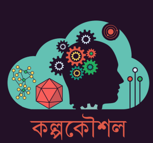

|
Key-points: Imagine if you were attacked by the hijackers. They took you to your Bank’s ATM booth and robbed a handsome amount from your account by knowing your pin code at gun point. What if you had an extra layer of security in your ATM booth to prevent this scenario? |
|||||||
| Simple gestures, like a wink, a nod, often remain unnoticed and we turned out these subtle gestures into something special secret password that will activate an alarming system to call rescue team while you are in danger in ATM booth. | |||||||
|
Our Plan:
Create a specific subtle gesture which will trigger an alarm in the control room. The security guards can assess the situation and take necessary measures to stop the hijacking. Devices Used:Using smart device like Kinect, webcam and RFID card, laptops, servo motors.Uniqueness:A user can assign to his own gestures at the same time of assembling PIN code.This prototype has the ability to improve user security and help to detect and catch the hijackers. |
|||||||
Team Members
|
 |
||||||